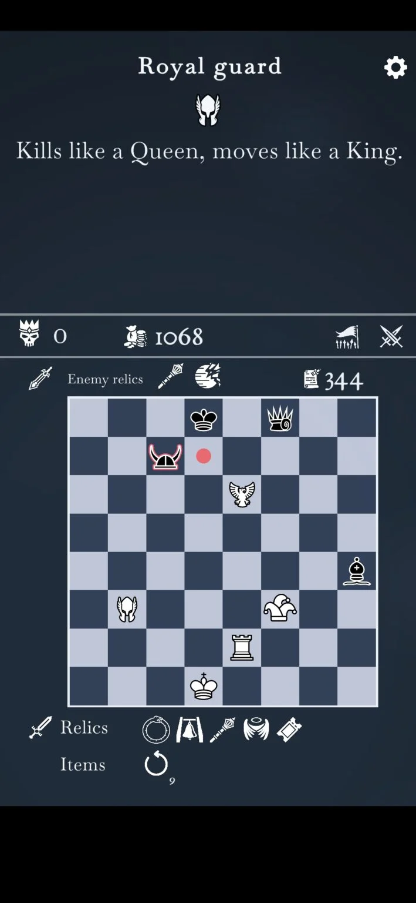
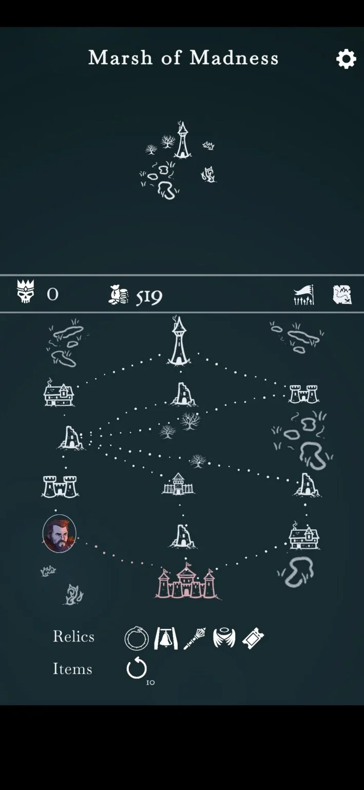
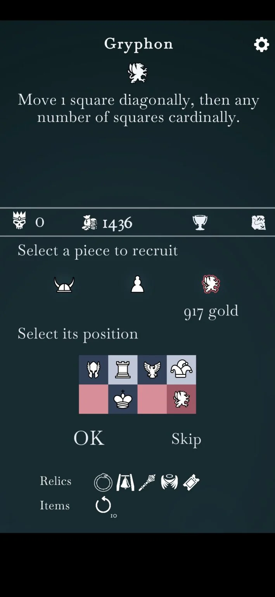

The Ouroboros King is one of the most quietly successful Steam games of 2023.
While it’s more than possible that you’ve never heard of it, this innovative take on chess has built a loyal following in the nine months or so since it launched, maintaining an impressive 9/10 average user rating.
So we’re very happy to reveal that developer Oriol Cosp has brought The Ouroboros King to Android and iOS, allowing mobile gamers to see what all the fuss is about.
Here’s the lowdown.
The Ouroboros King is billed as a chess roguelike game set in the Kingdom of Thessalonia—or rather, multiple Kingdoms of Thessalonia linked to different timelines, all of them plagued by an evil Coven.
Gameplay-wise, The Ouroboros King combines classic chess pieces that move in conventional fashion with novel chess pieces that do new and exciting things.
This can include the martyr exploding when captured – but also extends to how pieces impact others, such as the gorgon immobilising surrounding pieces and the bannerman moving like a king but allowing nearby pieces to move like queens.
As in chess, you can only move one piece per turn. But unlike chess The Ouroborous King gives you a host of relics to deploy—special items that grant you bonuses or temporary powers.
There are synergies between particular pieces, too, adding an extra tactical dimension to a game that already allows for more combinations than there are atoms in the known universe.
Once you fall in The Ouroboros King, you come back to life in another timeline where you’ll encounter a different procedurally generated map, different enemies, and different rewards.
  The Coven is still your target in every timeline, and after you’ve taken it down you can do it all again at a variety of difficulty levels.
The Ouroboros King is totally free to download, though you’ll have to pay to unlock the full version. This adds Acts 2 and 3, 35 new units, two new location types, a Practice mode, and an Infinite mode.